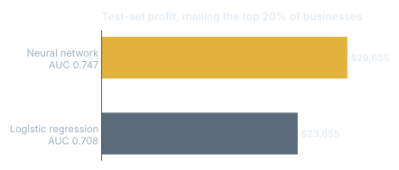

Intuit QuickBooks Upgrade Campaign
Customer Analytics, team project (Group 30).
Marketing analyticsCompleted
01Problem
Intuit wanted to mail a second wave of upgrade offers only to small businesses likely to respond.
02Approach
Compared logistic regression with a neural network and picked the model by test-set profit, not by accuracy alone.
03Impact
Neural network earned $29,655 on the test set vs $23,655, or $6.59 per piece mailed, projecting about $5.03M across 763,334 businesses.
Results

What I did
- Strongest signals: past upgraders, number of past orders, product version and recency.
- Mailed only the top 20% of ranked businesses so each piece clears its cost.
Tools
PythonpyrsmNeural networksLogistic regression